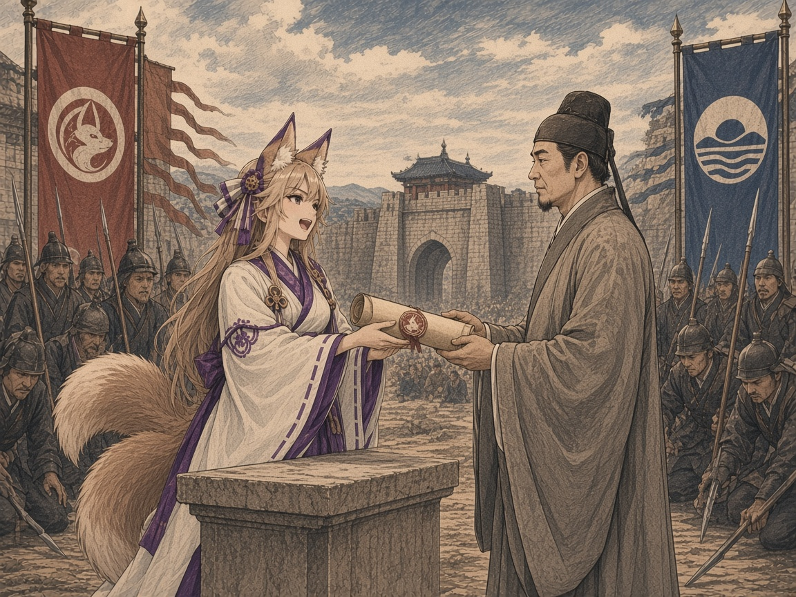

教団と泰平、停戦合意 長い戦争が終わる
第172期開戦から続く戦線が閉じる 青海と橙原も停戦 チェスからなのですへ18万8,500人

【総合部】第205期、狐っ娘の尻尾教団と泰平天国は停戦合意により戦争を終結させた。第172期の開戦から三十期余り続いた戦いは、ここで閉じた。同じ更新で、青海共和国と橙原自治共和国も停戦合意に達した。チェス＝シロバキア共和国からなのです主義人民共和国へ、十八万八千五百人が仕事を求めて移り、なのですは受け入れた。三つの出来事が重なり、前線の再編と人口の移動が同時に進む。詳報は2・3面。
藍岬軍港が破壊 黄砂の海底油田はオリョルッル領に
カペレナ王国の艦砲は藍岬共和国連邦の軍港（83,25）へ三発命中し、施設を破壊した。オリョルッル王国は黄砂同盟の海底油田（28,0）を占領。胡椒帝国は翠湖自治州へ宣戦布告し、開戦を第210期とした。チェス＝シロバキアでは火災で三万五千七百人が減り、同じ期に十八万八千五百人がなのですへ移った。火災は計十九件、人口減は七万五千三百人。チェス＝シロバキアでは怪獣サンジラが村を踏み荒らし、キングいのらも農場を荒らした。国特集は9面のテキスタン共和国。